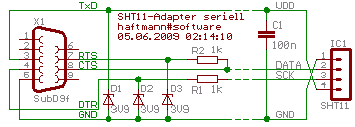
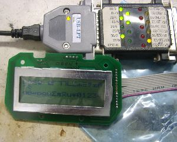
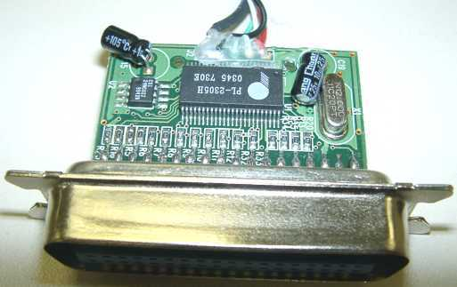

Serial ports are very well wrapped by Win32 functions,
and it is very inconvenient for programmers to access a
serial port directly.
The two control lines (RTS and DTR) and the TxD line are easily
controllable using
EscapeCommFunction() function.
The four status lines (CTS, DSR, DCD, RI) and the RxD line can be queried by
GetCommModemStatus() function.
This applies to old 16-bit Windows programs too — the Win16 API is similar.
Some programs are very slow when working with USB to serial converters. For example, simple PIC programmers.
How many bits per second are transferred using bit-banging depends heavily on your application. For following calculations, I assume USB high-speed.
The obvious limit is 8 kBit/s for read access (e.g. flash verify).
Practically, the limit is roughly the half by Windows's driver design.
If write access is written with USB2LPT or any other redirection in mind, it's still much faster.
However, most apps check each clock and data bit they write, so the speed drops
by factor 4 (even for write-only access), so we reach 1 kBit/s.
Even worse for JTAG because there are two data-out lines that are often checked
independently. So it drops to 600 bit/s.
Often, software re-reads every written byte, to be extra sure, this halfs the data rate again.
Therefore, expect no more than 0,5 .. 1 kBit/s transfer rates.
For example: avrdude (a popular command-line-driven Atmel AVR programmer software)
needs 18 seconds to read an ATmega16 via parallel port. That is 7 kBit/s. Not very fast, but sufficient.
With USB2LPT, it needs 6 minutes, that is 0,5 kBit/s.
A good AVR project for those (larger) controllers have a bootloader,
which is much faster and more convenient than programming via parallel port,
so you often need USB2LPT only for “doping” the typical 1 KByte bootloader
(which takes affordable 20 seconds via USB2LPT),
or for some troubleshooting (and — in case of AVR — setting fuses).
Specialized software aware to USB2LPT (i.e. that uses the USB2LPT API) can be much faster, up to roughly 20 MByte/s, by replacing parts of the firmware in controller's RAM on-the-fly.
While there is a 64 bit driver available, it does not feature the debug register redirection. Furthermore, the well-worked READ/WRITE_PORT_UCHAR redirection cannot work. There are simply no kernel functions to trap. However, the property sheet and the API is fully functional, so you can access the port pins with specialized software, e.g. my special build of inpout32.dll.
You may have luck especially for some older software (last update before 1995), you can check whether you can record IN & OUT instructions with this Dongle Emulator. Note that this program runs on Windows 3.1, 3.11, 95, 98, Me and 2000, but not on XP and newer (it seems to work but it doesn't record anything), whereas USB2LPT works on newer systems too.

No, USB2LPT is not perfect, however, suitable. The disadvantages are:For up to 3 output lines (and up to 5 input lines) it's quite perfect to use a serial port. USB→Serial adapters like this work seamlessly and — in many cases — fast enough. But note that mostly you have convert output voltages to TTL levels; for example with zener diodes 3.9 V. The maximum data rate via USB is 1000 level transitions per second.
For up to 8 output lines and 3 input lines,
I recommend using a regular and cheap USB→Printer adapter, like
this or
this.
However, the 5 V USB supply voltage is not available.
The connection requires some circuitry.
Read this detailed article
for possible solutions.
The maximum data rate is about 100000 level transitions per second
(even at multiple lines the same time, that's reasonably fast!),
so it's perfect for controlling LEDs
– or alphanumeric LC display controllers in nibble mode
– or pixel graphics LC display controllers in serial mode or using a port expander.
Many devices don't need inputs, e.g. stepper motors, serial D/A converters,
or DDS frequency generators often used in ham radio applications.
The status lines ERR ⑮, ONL ⑬, and PE ⑫ can be read using
DeviceIoControl(…,IOCTL_USBPRINT_GET_LPT_STATUS,…)
with 1 kByte/s maximum speed.
The INIT (16) line can only be controlled to output a LOW spike of some µs, nothing else, using
DeviceIoControl(…,IOCTL_USBPRINT_SOFT_RESET,…).
The remaining control and status lines STB ①,
AF ⑭, SEL (17), ACK ⑩, and BUSY ⑪
are definitively not useable!
You get a handle to the USB→Printer adapter using
this weird Win32-API code.
It's much easier for Linux, simply open /dev/usb/lpn.
Unlimited output lines can be achieved using port expander circuits like 74HCT595, either attached to any parallel or serial port solution stated above.
For output and input lines and USB power (and built-in “brain”) you should use HID-based solutions like this or this or this.
For up to 2 (possibly also 6) output lines with precise timing control in microseconds
pick your … sound card!!
You have to solve DC clamping and amplification yourself,
use operational amplifiers, comparators, possibly diodes and analog switches for this.
The Win32 workhorse function for waveform output is
waveOutWrite().
For the USB Microcontroller, IMHO, ARM7 based controllers are best suited, like
NXP (former Philips)
LPC214x
or Atmel
AT91SAM7S
or
AT32UC3B64 too.
The brand-new MSP430F55xx
by Texas Instruments
are not suited due to missing isochronous USB Pipes.
I will pick up this problem when I gather a CNC tool machine.

For controlling LCD, someone recommends USB2LPT. Is this OK?Note by JGrosJean at ieee.org: “My low speed USB2LPT works in WinXP running on a virtual machine using Oracle VirtualBox in Linux.”

The PL-2305 has a backdoor. Its descriptor is as follows:The »Alternate Setting Nr. 2« had no function. Probably, this is a IEEE 1284.4 protocol stub.
- Device (string descriptors can be defined in EEPROM), Class »Multifunction«
- Configuration Nr. 1
- Interface Nr. 0
- Alternate Setting Nr. 0
Class: 07/01 = Drucker, Protocol: 01 = one direction
- Endpoint Nr. 2, Bulk, Output, 64 Bytes
- Alternate Setting Nr. 1
Class: 07/01 = Drucker, Protocol: 02 = two directions
- Endpoint Nr. 1, Bulk, Output, 64 Bytes
- Endpoint Nr. 2, Bulk, Input, 64 Bytes
- Alternate Setting Nr. 2
Class: FF/00 = gusto, Protocol: FF = gusto
- Endpoint Nr. 1, Bulk, Output, 64 Bytes
- Endpoint Nr. 2, Bulk, Input, 64 Bytes
- Endpoint Nr. 3, Interrupt, 4 Bytes, Interval: 1 ms
This converter (until Revision 1.1) has the following descriptor:Such a two-interface device forms two devices. For this, Windows loads a “fork” driver, that itself loads two real drivers.
- Device "USB2LPT Converter", Class »Multifunction«
- Configuration Nr. 1
- Interface Nr. 0
- Alternate Setting Nr. 0
Class: FF/FF = gusto, Protocol: FF = gusto
- Endpoint Nr. 2, Bulk, Output, 64 Bytes
- Endpoint Nr. 2, Bulk, Input, 64 Bytes
- Interface Nr. 1
- Alternate Setting Nr. 0
Class: 07/01 = Printer, Protocol: 01 = one direction
- Endpoint Nr. 4, Bulk, Output, 64 Bytes
- Alternate Setting Nr. 1
Class: 07/01 = Printer, Protocol: 02 = two directions
- Endpoint Nr. 4, Bulk, Output, 64 Bytes
- Endpoint Nr. 4, Bulk, Input, 64 Bytes
For more exact timing I advise you to “roll your own” and write your own 8051 program. You can download it anytime to the converter. [This converter is actually almost the same as an EZ-USB development board!]
usb2lpt.inf file to include the following sections:
This example sets the base address to 278h, timeout to 200 ms, and mode = ECP + EPP.[Dev.ntx86.HW] AddReg = usercfg_addreg [usercfg_addreg] HKR,,UserCfg,1,78,02,c8,00,06,03
usb2lpt.h):
struct USERCFG { USHORT LptBase; // trapped base address (EPP = base address + 4, ECP = base address + 0x400) USHORT TimeOut; // timeout value for write-back cache (both little-endian values) UCHAR flags; // OR-ed values of the following bits #define UC_Debugreg 0x01 // Use debug register trap (one of four debug registers for every address range)#define UC_Function 0x02 // Redirect kernel-mode access routines (READ_PORT_UCHAR etc.)#define UC_WriteCache 0x04 // Enable write-back cache#define UC_ReadCache0 0x08 // Enable read-ahead for base address+0#define UC_ReadCache2 0x10 // Enable read-ahead for base address+2#define UC_ReadCacheN 0x20 // Enable read-ahead for other registers (without effect)#define UC_ForceRes 0x40 // unused#define UC_ForceDebReg 0x80 // Force debug register usage even if used previously (Win98 problem)UCHAR Mode; // enum SPP,EPP,ECP,EPP+ECP };
Every i86 and AMD64 compatible processor has four debug register sets. In case of SMP machines, this number remains the same because all processors must be programmed to halt on the same breakpoints (to be symmetrically). Indeed, the driver contains instructions to run specific code on one specific processor, that is scheduled in a small loop for all processors while the “main” (the calling) processor waits for completion of the others. It was somehow tricky but it works. There is no Windows Kernel API for doing this, but some API for helping: A deferred procedure call (DPC) with a hint to run on a specific processor. The current code doesn't support hot-swapping of processors, I have no machine to test this:-)
The USB2LPT.SYS driver consumes 1..3 debug register sets
for each USB2LPT device, depending on emulation mode.
For SPP mode
(which is by far most-often sufficient),
the minimum of 1 set covers all the 3 adjanced addresses,
e.g. 0x378..0x37A.
(To be true, it will cover 4 addresses,
but the driver silently ignores the fourth address e.g. 0x37B.)
So, when using SPP only, four USB2LPT devices can be connected to one PC with hardware virtualization using debug register trapping method.
The driver itself currently limits devices to nine (not to have LPT10 or more).
But the fifth device will not acquire debug register trap virtualization.
The other type of virtualization, READ/WRITE_PORT_UCHAR/USHORT/ULONG,
will be in effect for unlimited USB2LPT devices,
so if you know your different accessing software a bit,
you can assign redirection method to specific addresses and hence to specific applications.
For Windows 9x/Me, this applies to the IOPM trap too.
For AMD64 versions, unluckily, no READ/WRITE_PORT_UCHAR/USHORT/ULONG API exists,
so only the debug register trap can ever work, but that's still hard to implement.
Because there is driver certification enforcement in effect,
there is only a handful of drivers available accessing port addresses.
The well-known INPOUT32.DLL
(or INPOUTX64.DLL) contains such certified drivers.
The DLL code silently installs and loads (and unloads) that driver
when the DLL is loaded or unloaded.
So it's easy to make a replacement INPOUT32.DLL that “speaks” to USB2LPT device
through its native interface, not needing any quirks like debug register trap.
{kind=link}
{kind=link}